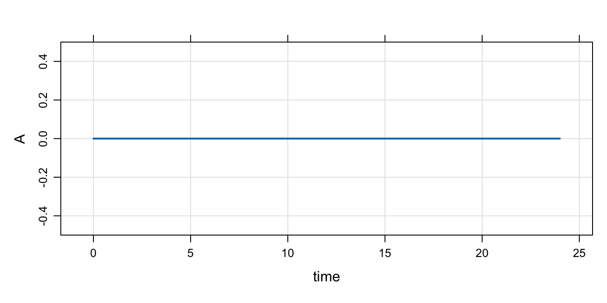
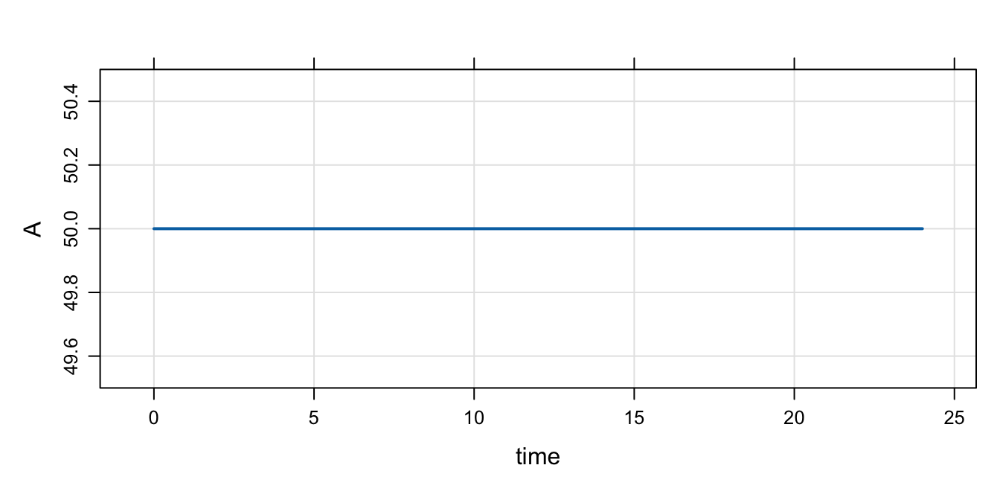
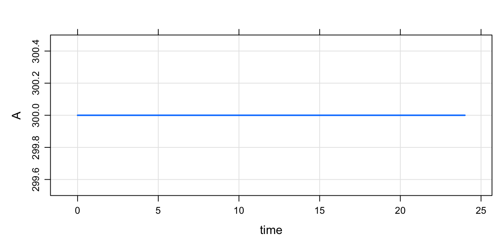
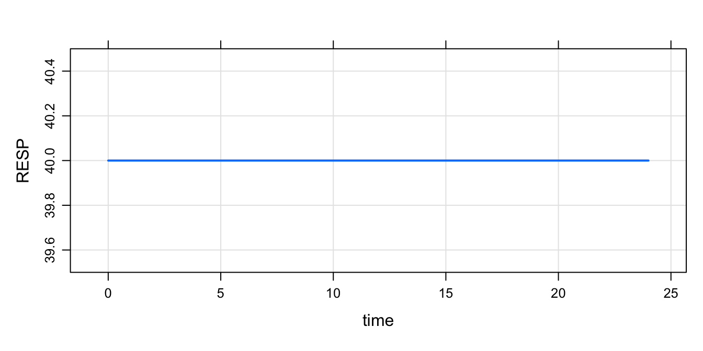
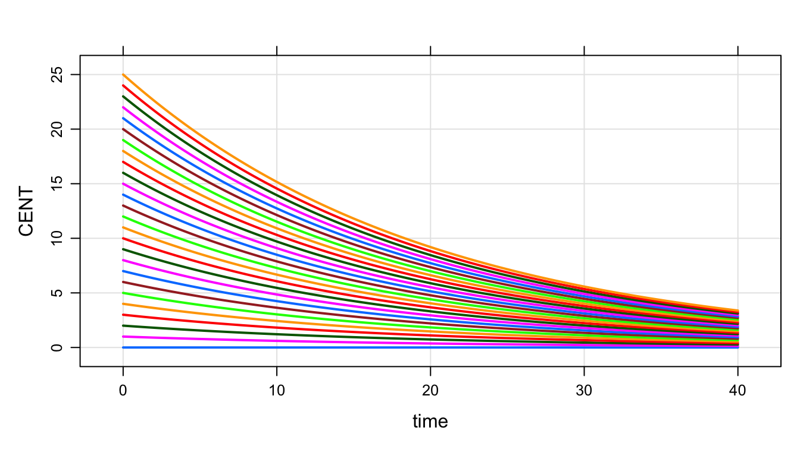
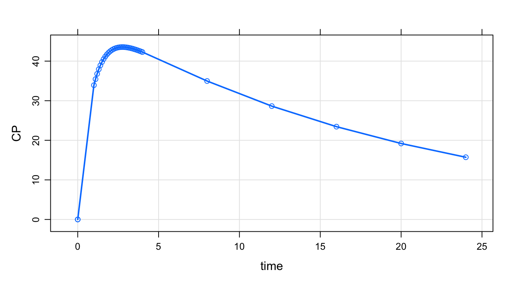
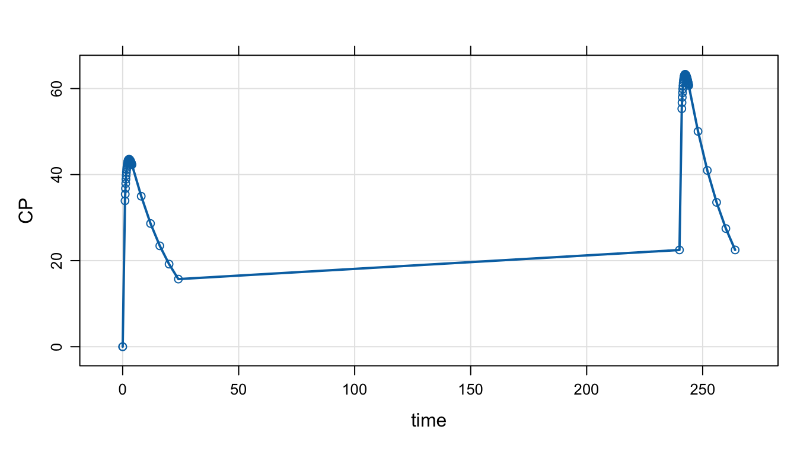
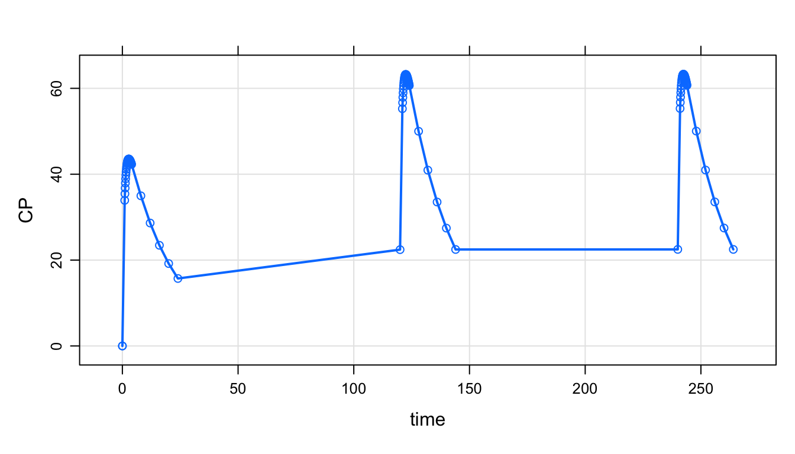

$PROB
# Final PK model
- Author: Pmetrics Scientist
- Client: Pharmaco, Inc.
- Date: `r Sys.Date()`
- NONMEM Run: 12345
- Structure: one compartment, first order absorption
- Implementation: closed form solutions
- Error model: Additive + proportional
- Covariates:
- WT on clearance
- SEX on volume
- Random effects on: `CL`, `V`, `KA`11 Topics
11.1 Annotated model specification
Here is a complete annotated mrgsolve model. The goal was to get in several of the most common blocks that you might want to annotate. The different code blocks are rendered here separately for clarity in presentation; but users should include all relevant blocks in a single file (or R string).
[PARAM] @annotated
TVCL : 1.1 : Clearance (L/hr)
TVV : 35.6 : Volume of distribution (L)
TVKA : 1.35 : Absorption rate constant (1/hr)
WT : 70 : Weight (kg)
SEX : 1 : Male = 0, Female 1
WTCL : 0.75 : Exponent weight on CL
SEXV : 0.878 : Volume female/Volume male[MAIN]
double CL = TVCL*pow(WT/70,WTCL)*exp(ECL);
double V = TVV *pow(SEXVC,SEX)*exp(EV);
double KA = TVKA*exp(EKA);[OMEGA] @name OMGA @correlation @block @annotated
ECL : 1.23 : Random effect on CL
EV : 0.67 0.4 : Random effect on V
EKA : 0.25 0.87 0.2 : Random effect on KA[SIGMA] @name SGMA @annotated
PROP: 0.25 : Proportional residual error
ADD : 25 : Additive residual error[CMT] @annotated
GUT : Dosing compartment (mg)
CENT : Central compartment (mg)[PKMODEL] ncmt = 1, depot=TRUE[TABLE]
capture IPRED = CENT/V;
double DV = IPRED*(1+PROP) + ADD;[CAPTURE] @annotated
DV : Concentration (mg/L)
ECL : Random effect on CL
CL : Individual clearance (L/hr)11.2 Set initial conditions
library(mrgsolve)
library(dplyr)11.2.1 Summary
mrgsolvekeeps a base list of compartments and initial conditions that you can update either fromRor from inside the model specification- When you use
$CMT, the value in that base list is assumed to be 0 for every compartment mrgsolvewill by default use the values in that base list when starting the problem- When only the base list is available, every individual will get the same initial condition
- You can override this base list by including code in
$MAINto set the initial condition - Most often, you do this so that the initial is calculated as a function of a parameter
- For example,
$MAIN RESP_0 = KIN/KOUT;whenKINandKOUThave some value in$PARAM - This code in
$MAINoverwrites the value in the base list for the currentID - For typical PK/PD type models, we most frequently initialize in
$MAIN - This is equivalent to what you might do in your NONMEM model
- For larger systems models, we often just set the initial value via the base list
11.2.2 Make a model only to examine init behavior
Note: IFLAG is my invention only for this demo. The demo is always responsible for setting and interpreting the value (it is not reserved in any way and mrgsolve does not control the value).
For this demo
- Compartment
Ainitial condition defaults to 0 - Compartment
Ainitial condition will get set toBASEonly ifIFLAG > 0 - Compartment
Aalways stays at the initial condition
code <- '
$PARAM BASE=100, IFLAG = 0
$CMT A
$MAIN
if(IFLAG > 0) A_0 = BASE;
$ODE dxdt_A = 0;
'mod <- mcode("init",code)Check the initial condition
init(mod).
. Model initial conditions (N=1):
. name value . name value
. A (1) 0 | . ... .Note:
- We used
$CMTin the model spec; that implies that the base initial condition forAis set to 0 - In this chunk, the code in
$MAINdoesn’t get run becauseIFLAGis 0 - So, if we don’t update something in
$MAINthe initial condition is as we set it in the base list
mod %>% mrgsim %>% plot
Next, we update the base initial condition for A to 50
Note:
- The code in
$MAINstill doesn’t get run becauseIFLAGis 0
mod %>% init(A = 50) %>% mrgsim %>% plot
Now, turn on IFLAG
Note:
- Now, that code in
$MAINgets run A_0is set to the value ofBASE
mod %>% param(IFLAG=1) %>% mrgsim %>% plot
mod %>% param(IFLAG=1, BASE=300) %>% mrgsim %>% plot
11.2.3 Example PK/PD model with initial condition
Just to be clear, there is no need to set any sort of flag to set the initial condition as seen here:
code <- '
$PARAM AUC=0, AUC50 = 75, KIN=200, KOUT=5
$CMT RESP
$MAIN
RESP_0 = KIN/KOUT;
$ODE
dxdt_RESP = KIN*(1-AUC/(AUC50+AUC)) - KOUT*RESP;
'mod <- mcode("init2", code)The initial condition is set to 40 per the values of KIN and KOUT
mod %>% mrgsim %>% plot
Even when we change RESP_0 in R, the calculation in $MAIN gets the final say
mod %>% init(RESP=1E9) %>% mrgsim. Model: init2
. Dim: 25 x 3
. Time: 0 to 24
. ID: 1
. ID time RESP
. 1: 1 0 40
. 2: 1 1 40
. 3: 1 2 40
. 4: 1 3 40
. 5: 1 4 40
. 6: 1 5 40
. 7: 1 6 40
. 8: 1 7 4011.2.4 Remember: calling init will let you check to see what is going on
- It’s a good idea to get in the habit of doing this when things aren’t clear
initfirst takes the base initial condition list, then calls$MAINand does any calculation you have in there; so the result is the calculated initials
init(mod).
. Model initial conditions (N=1):
. name value . name value
. RESP (1) 0 | . ... .mod %>% param(KIN=100) %>% init.
. Model initial conditions (N=1):
. name value . name value
. RESP (1) 0 | . ... .11.2.5 Set initial conditions via idata
Go back to house model
mod <- mrgsolve:::house()init(mod).
. Model initial conditions (N=3):
. name value . name value
. CENT (2) 0 | RESP (3) 50
. GUT (1) 0 | . ... .Notes
- In
idata(only), include a column withCMT_0(like you’d do in$MAIN). - When each ID is simulated, the
idatavalue will override the base initial list for that subject. - But note that if
CMT_0is set in$MAIN, that will override theidataupdate.
idata <- expand.idata(CENT_0 = seq(0,25,1))idata %>% head. ID CENT_0
. 1 1 0
. 2 2 1
. 3 3 2
. 4 4 3
. 5 5 4
. 6 6 5out <-
mod %>%
idata_set(idata) %>%
mrgsim(end=40)plot(out, CENT~.)
11.3 Updating parameters
The parameter list was introduced in Section 1.1 and the $PARAM code block was shown in Section 2.2.4. Once a model is compiled, the names and number of parameters in a model is fixed. However, the values of parameters can be changed: parameters may be updated either by the user (in R) or by mrgsolve (in the C++ simulation engine, as the simulation proceeds).
- To update in
R, use theparam()function (see examples below) - To have
mrgsolveupdate the parameters, attach columns to your data set (eitherdata_setoridata_set) with the same name as items in the parameter list
Both of these methods are discussed and illustrated in the following sections.
11.3.1 Parameter update hierarchy
As we noted above, new parameter values can come from three potential sources:
- Modification of the (base) parameter list
- A column in an
idata_setthat has the same name as a model parameter - A column in a
data_setthat has the same name as a model parameter
These sources for new parameter values are discussed below. We note here that the sources listed above are listed in the order of the parameter update hierarchy. So, the base parameter list provides the value by default. A parameter value coming from an idata_set will override the value in the base list. And a parameter value coming from a data_set will override the value coming from the base list or an idata_set (in case a parameter is listed in both the idata_set and the data_set). In other words, the hierarchy is:
- base parameter list is the default
- the
idata_setoverrides the base list - the
data_setoverrides theidata_setand the base list
The parameter update hierarchy is discussed in the following sections.
Base parameter set
- Every model has a base set of “parameters”
- These are named and set in
$PARAM - Parameters can only get into the parameter list in
$PARAM(or$THETA) - No changing the names or numbers of parameters once the model is compiled
- But, several ways to change the values
code <- '
$VCMT KYLE
$PARAM CL = 1.1, VC=23.1, KA=1.7, KM=10
$CAPTURE CL VC KA KM
'
mod <- mcode("tmp", code, warn=FALSE)param(mod).
. Model parameters (N=4):
. name value . name value
. CL 1.1 | KM 10
. KA 1.7 | VC 23.1The base parameter set is the default
The base parameter set allows you to run the model without entering any other data; there are some default values in place.
The parameters in the base list can be changed or updated in R
Use the param() function to both set and get:
mod <- param(mod, CL=2.1)param(mod).
. Model parameters (N=4):
. name value . name value
. CL 2.1 | KM 10
. KA 1.7 | VC 23.1But whatever you’ve done in R, there is a base set (with values) to use. See Section 11.3.2 for a more detailed discussion of using param() to updated the base list.
Parameters can also be updated during the simulation run
Parameters can be updated by putting columns in idata set or data_set that have the same name as one of the parameters in the parameter list. But there is no changing values in the base parameter set once the simulation starts.
That is, the following model specification will not compile:
$PARAM CL = 2
$MAIN CL = 3; // ERRORYou cannot over-write the value of a parameter in the model specification.
Let mrgsolve do the updating.
mrgsolve always reverts to the base parameter set when starting work on a new individual.
Parameters updated from idata_set
When mrgsolve finds parameters in idata, it will update the base parameter list with those parameters prior to starting that individual.
data(exidata)
head(exidata). ID CL VC KA KOUT IC50 FOO
. 1 1 1.050 47.80 0.8390 2.45 1.280 4
. 2 2 0.730 30.10 0.0684 2.51 1.840 6
. 3 3 2.820 23.80 0.1180 3.88 2.480 5
. 4 4 0.552 26.30 0.4950 1.18 0.977 2
. 5 5 0.483 4.36 0.1220 2.35 0.483 10
. 6 6 3.620 39.80 0.1260 1.89 4.240 1Notice that there are several columns in exidata that match up with the names in the parameter list
names(exidata). [1] "ID" "CL" "VC" "KA" "KOUT" "IC50" "FOO"names(param(mod)). [1] "CL" "VC" "KA" "KM"The matching names tell mrgsolve to update, assigning each individual their individual parameter.
out <-
mod %>%
idata_set(exidata) %>%
mrgsim(end=-1 , add=c(0,2))out. Model: tmp
. Dim: 20 x 7
. Time: 0 to 2
. ID: 10
. ID time KYLE CL VC KA KM
. 1: 1 0 0 1.050 47.8 0.8390 10
. 2: 1 2 0 1.050 47.8 0.8390 10
. 3: 2 0 0 0.730 30.1 0.0684 10
. 4: 2 2 0 0.730 30.1 0.0684 10
. 5: 3 0 0 2.820 23.8 0.1180 10
. 6: 3 2 0 2.820 23.8 0.1180 10
. 7: 4 0 0 0.552 26.3 0.4950 10
. 8: 4 2 0 0.552 26.3 0.4950 10Parameters updated from data_set
Like an idata set, we can put parameters on a data set
data <- expand.ev(amt=0, CL=c(1,2,3), VC=30)out <-
mod %>%
data_set(data) %>%
obsonly %>%
mrgsim(end=-1, add=c(0,2))out. Model: tmp
. Dim: 6 x 7
. Time: 0 to 2
. ID: 3
. ID time KYLE CL VC KA KM
. 1: 1 0 0 1 30 1.7 10
. 2: 1 2 0 1 30 1.7 10
. 3: 2 0 0 2 30 1.7 10
. 4: 2 2 0 2 30 1.7 10
. 5: 3 0 0 3 30 1.7 10
. 6: 3 2 0 3 30 1.7 10This is how we do time-varying parameters:
data <-
data_frame(CL=seq(1,5)) %>%
mutate(evid=0,ID=1,cmt=1,time=CL-1,amt=0). Warning: `data_frame()` was deprecated in tibble 1.1.0.
. ℹ Please use `tibble()` instead.mod %>%
data_set(data) %>%
mrgsim(end=-1). Model: tmp
. Dim: 5 x 7
. Time: 0 to 4
. ID: 1
. ID time KYLE CL VC KA KM
. 1: 1 0 0 1 23.1 1.7 10
. 2: 1 1 0 2 23.1 1.7 10
. 3: 1 2 0 3 23.1 1.7 10
. 4: 1 3 0 4 23.1 1.7 10
. 5: 1 4 0 5 23.1 1.7 10For more information on time-varying covariates (parameters), see Section 11.8 and ?sec-section-sequence.
Parameters are carried back when first record isn’t at time == 0
What about this?
data <- expand.ev(amt=100,time=24,CL=5,VC=32)
data. ID time amt cmt evid CL VC
. 1 1 24 100 1 1 5 32The first data record happens at time==24
mod %>%
data_set(data) %>%
mrgsim(end=-1, add=c(0,2)). Model: tmp
. Dim: 3 x 7
. Time: 0 to 24
. ID: 1
. ID time KYLE CL VC KA KM
. 1: 1 0 0 5 32 1.7 10
. 2: 1 2 0 5 32 1.7 10
. 3: 1 24 100 5 32 1.7 10Since the data set doesn’t start until time==5, we might think that CL doesn’t change from the base parameter set until then.
But by default, mrgsolve carries those parameter values back to the start of the simulation. This is by design … by far the more useful configuration.
If you wanted the base parameter set in play until that first data set record, do this:
mod %>%
data_set(data) %>%
mrgsim(end=-1,add=c(0,2), filbak=FALSE). Model: tmp
. Dim: 3 x 7
. Time: 0 to 24
. ID: 1
. ID time KYLE CL VC KA KM
. 1: 1 0 0 5 32 1.7 10
. 2: 1 2 0 5 32 1.7 10
. 3: 1 24 100 5 32 1.7 10Will this work?
idata <- do.call("expand.idata", as.list(param(mod)))
idata. ID CL VC KA KM
. 1 1 2.1 23.1 1.7 10Here, we’ll pass in both data_set and idata_set and they have conflicting values for the parameters.
mod %>%
data_set(data) %>%
idata_set(idata) %>%
mrgsim(end=-1,add=c(0,2)). Model: tmp
. Dim: 3 x 7
. Time: 0 to 24
. ID: 1
. ID time KYLE CL VC KA KM
. 1: 1 0 0 5 32 1.7 10
. 2: 1 2 0 5 32 1.7 10
. 3: 1 24 100 5 32 1.7 10The data set always gets the last word.
11.3.2 Updating the base parameter list
From the previous section
param(mod).
. Model parameters (N=4):
. name value . name value
. CL 2.1 | KM 10
. KA 1.7 | VC 23.1Update with name-value pairs
We can call param() to update the model object, directly naming the parameter to update and the new value to take
mod %>% param(CL = 777, KM = 999) %>% param.
. Model parameters (N=4):
. name value . name value
. CL 777 | KM 999
. KA 1.7 | VC 23.1The parameter list can also be updated by scanning the names in a list
what <- list(CL = 555, VC = 888, KYLE = 123, MN = 100)
mod %>% param(what) %>% param.
. Model parameters (N=4):
. name value . name value
. CL 555 | KM 10
. KA 1.7 | VC 888mrgsolve looks at the names to drive the update. KYLE (a compartment name) and MN (not in the model anywhere) are ignored.
Alternatively, we can pick a row from a data frame to provide the input for the update
d <- data_frame(CL=c(9,10), VC=c(11,12), KTB=c(13,14))
mod %>% param(d[2,]) %>% param.
. Model parameters (N=4):
. name value . name value
. CL 10 | KM 10
. KA 1.7 | VC 12Here the second row in the data frame drives the update. Other names are ignored.
A warning will be issued if an update is attempted, but no matching names are found
mod %>% param(ZIP = 1, CODE = 2) %>% paramWarning message:
Found nothing to update: param 11.4 Time grid objects
Simulation times in mrgsolve
mod <- mrgsolve:::house() %>% Req(CP) %>% ev(amt=1000,ii=24, addl=1000) mrgsolve keeps track of a simulation start and end time and a fixed size step between start and end (called delta). mrgsolve also keeps an arbitrary vector of simulation times called add.
mod %>%
mrgsim(end=4,delta=2,add=c(7,9,50)) %>%
as.data.frame. ID time CP
. 1 1 0 0.00000
. 2 1 0 0.00000
. 3 1 2 42.47580
. 4 1 4 42.28701
. 5 1 7 36.75460
. 6 1 9 33.26649
. 7 1 50 60.97754tgrid objects
The tgrid object abstracts this setup and allows us to make complicated sampling designs from elementary building blocks.
Make a day 1 sampling with intensive sampling around the peak and sparser otherwise
peak1 <- tgrid(1,4,0.1)
sparse1 <- tgrid(0,24,4)Use the c operator to combine simpler designs into more complicated designs
day1 <- c(peak1,sparse1)Check this by calling stime
stime(day1). [1] 0.0 1.0 1.1 1.2 1.3 1.4 1.5 1.6 1.7 1.8 1.9 2.0 2.1 2.2 2.3
. [16] 2.4 2.5 2.6 2.7 2.8 2.9 3.0 3.1 3.2 3.3 3.4 3.5 3.6 3.7 3.8
. [31] 3.9 4.0 8.0 12.0 16.0 20.0 24.0Pass this object in to mrgsim as tgrid. It will override the default start/end/delta/add sequence.
mod %>%
mrgsim(tgrid=day1) %>%
plot(type='b')
Now, look at both day 1 and day 10:
Adding a number to a tgrid object will offset those times by that amount.
des <- c(day1, day1+10*24)
mod %>%
mrgsim(tgrid=des) %>%
plot(type='b')
Pick up day 5 as well
des <- c(des, day1+5*24)
mod %>%
mrgsim(tgrid=des) %>%
plot(type='b')
11.5 Individualized sampling designs
Here is a PopPK model and a full data_set.
mod <- mrgsolve:::house()
data(exTheoph)
df <- exTheoph
head(df). ID WT Dose time conc cmt amt evid
. 1 1 79.6 4.02 0.00 0.00 1 4.02 1
. 2 1 79.6 4.02 0.25 2.84 0 0.00 0
. 3 1 79.6 4.02 0.57 6.57 0 0.00 0
. 4 1 79.6 4.02 1.12 10.50 0 0.00 0
. 5 1 79.6 4.02 2.02 9.66 0 0.00 0
. 6 1 79.6 4.02 3.82 8.58 0 0.00 0mod %>%
Req(CP) %>%
carry.out(a.u.g) %>%
data_set(df) %>%
obsaug %>%
mrgsim . Model: housemodel
. Dim: 5904 x 4
. Time: 0 to 120
. ID: 12
. ID time a.u.g CP
. 1: 1 0.00 1 0.00000
. 2: 1 0.00 0 0.00000
. 3: 1 0.25 1 0.04552
. 4: 1 0.25 0 0.04552
. 5: 1 0.50 1 0.07870
. 6: 1 0.57 0 0.08624
. 7: 1 0.75 1 0.10274
. 8: 1 1.00 1 0.12001Now, define two time grid objects: des1 runs from 0 to 24 and des2 runs from 0 to 96, both every hour.
des1 <- tgrid(0,24,1)
des2 <- tgrid(0,96,1)
range(stime(des1)). [1] 0 24range(stime(des2)). [1] 0 96Now, derive an idata_set after adding a grouping column (GRP) that splits the data set into two groups
df <- mutate(df, GRP = as.integer(ID > 5))
id <- df %>% distinct(ID,GRP)
id. ID GRP
. 1 1 0
. 2 2 0
. 3 3 0
. 4 4 0
. 5 5 0
. 6 6 1
. 7 7 1
. 8 8 1
. 9 9 1
. 10 10 1
. 11 11 1
. 12 12 1Now, we have two groups in GRP in idata_set and we have two tgrid objects.
- Pass in both the
idata_setand thedata_set - Call
design - Identify
GRPasdescol; the column must be inidata_set - Pass in a list of designs; it must be at least two because there are two levels in
GRP
When we simulate, the individuals in GRP 1 will get des1 and those in GRP 2 will get des2
out <-
mod %>%
Req(CP) %>%
carry.out(a.u.g,GRP) %>%
idata_set(id) %>%
data_set(df) %>%
design(descol="GRP", deslist=list(des1,des2)) %>%
obsaug %>%
mrgsim
plot(out, CP~time|GRP)
11.6 Some helpful C++
Recall that the following blocks require valid C++ code:
$PREAMBLE$MAIN$ODE$TABLE$GLOBAL$PRED
We don’t want users to have to be proficient in C++ to be able to use mrgsolve. and we’ve created several macros to help simplify things as much as possible.
However, it is required to become familiar with some of the basics and certainly additional knowledge of how to do more than just the basics will help you code more and more complicated models in mrgsolve.
There are an unending stream of tutorials, references and help pages on C++ to be found on the interweb. As a general source, I like to use https://en.cppreference.com/. But, again, there many other good resources out there that can suit your needs.
The rest of this section provides a very general reference of the types of C++ code and functions that you might be using in your model.
11.6.1 Semi-colons
Every statement in C++ must end with a semi-colon. For example;
[ MAIN ]
double CL = exp(log_TVCL + ETA(1));or
[ ODE ]
dxdt_DEPOT = -KA * DEPOT;11.6.2 if-else
if(a == 2) b = 2;if(a==2) {
b = 2;
}if(a == 2) {
b=2;
} else {
b=3;
}This is the equivalent of x <- ifelse(c == 4, 8, 10) in R
double x = c == 4 ? 8 : 10;11.6.3 Functions
The following functions are hopefully understandable based on the function name. Consult https://cppreference.com for further details.
# base^exponent
double d = pow(base,exponent);
double e = exp(3);
# absolute value
double f = fabs(-4);
double g = sqrt(5);
double h = log(6);
double i = log10(7);
double j = floor(4.2);
double k = ceil(4.2);
double l = std::max(0.0, -3.0);
double m = std::min(0.0, -3.0);11.6.4 Integer division
The user is warned about division with two integers. In R, the following statement evaluates to 0.75:
3/4. [1] 0.75But in C++ it evaluates to 0:
double x = 3/4;This is because both the 3 and the 4 are taken as integer literals. This produces the same result as
int a = 3;
int b = 4;
double x = a/b;When one integer is divided by another integer, the remainder is discarded (the result is rounded down). This is the way C++ works. The user is warned.
Note that parameters in mrgsolve are doubles so this will evaluate to 0.75
[ PARAM ] a = 3
[ MAIN ]
double x = a/4;Since a is a parameter the operation of a/4 is not integer division and the result is 0.75.
Unless you are already very comfortable with this concept, users are encouraged to add .0 suffix to any literal number written as C++ code. For example:
double x = 3.0 / 4.0;I think it’s fair to say that the vast majority of time you want this to evaluate to 0.75 and writing 3.0/4.0 rather than 3/4 will ensure you will not discard any remainder here.
If you would like to experiment with these concepts, try running this code
library(mrgsolve)
code <- '
[ param ] a = 3
[ main ]
capture x = 3/4;
capture y = 3.0/4.0;
capture z = a/4;
'
mod <- mcode("foo", code)
mrgsim(mod). Model: foo
. Dim: 25 x 5
. Time: 0 to 24
. ID: 1
. ID time x y z
. 1: 1 0 0 0.75 0.75
. 2: 1 1 0 0.75 0.75
. 3: 1 2 0 0.75 0.75
. 4: 1 3 0 0.75 0.75
. 5: 1 4 0 0.75 0.75
. 6: 1 5 0 0.75 0.75
. 7: 1 6 0 0.75 0.75
. 8: 1 7 0 0.75 0.7511.6.5 Pre-processor directives
Pre-processor directives are global substitutions that are made in your model code at the time the model is compiled. For example
$GLOBAL
#define CP (CENT/VC)When you write this into your model, the pre-processor will find every instance of CP and replace it with (CENT/VC). This substitution happens right as the model is compiled; you won’t see this substitution happen anywhere, but think of it as literal replacement of CP with (CENT/VC).
Note:
- Put all pre-processor directives in
$GLOBAL. - It is usually a good idea to enclose the substituted coded in parentheses; this ensures that, for example,
CENT/VCis evaluated as is, regardless of the surrounding code where it is evaluated. - Under the hood, mrgsolve uses lots of pre-processor directives to define parameter names, compartment names and other variables; you will see a compiler error if you try to re-define an existing pre-processor directive. If so, just choose another name for your directive.
11.7 Resimulate ETA and EPS
Call simeps(n) to resimulate ETA
- No
$PLUGINis required simeta(n)takes a single argument (n), the ETA number to resimulate
For example, we can simulate individual-level covariates within a certain range:
code <- '
$PARAM TVCL = 1, TVWT = 70
$MAIN
capture WT = TVWT*exp(EWT);
int i = 0;
while((WT < 60) || (WT > 80)) {
if(++i > 100) break;
simeta(1);
WT = TVWT*exp(EWT);
}
$OMEGA @labels EWT
4
$CAPTURE EWT WT
'
mod <- mcode("simeta", code). Warning in check_sim_eta_eps_n(x, spec): simeta(n) was requested; resimulating
. single ETA values is now discouraged and will soon be deprecated; use simeta()
. to resimulate all ETA; silence this warning by setting MRGSOLVE_RESIM_N_WARN to
. FALSE in $ENV.out <- mod %>% mrgsim(nid=100, end=-1)
sum <- summary(out)
sum. ID time EWT WT
. Min. : 1.00 Min. :0 Min. :-0.15355 Min. :60.04
. 1st Qu.: 25.75 1st Qu.:0 1st Qu.:-0.08545 1st Qu.:64.27
. Median : 50.50 Median :0 Median :-0.01509 Median :68.95
. Mean : 50.50 Mean :0 Mean :-0.02078 Mean :68.76
. 3rd Qu.: 75.25 3rd Qu.:0 3rd Qu.: 0.03810 3rd Qu.:72.72
. Max. :100.00 Max. :0 Max. : 0.13210 Max. :79.89Call simeps(n) to resimulate EPS
- No
$PLUGINis required simeps()takes a single argument (n), the EPS number to resimulate
For example, we can resimulate until all concentrations are greater than zero:
code <- '
$PARAM CL = 1, V = 20,
$CMT CENT
$SIGMA 50
$PKMODEL ncmt=1
$TABLE
capture CP = CENT/V + EPS(1);
int i = 0;
while(CP < 0 && i < 100) {
simeps(1);
CP = CENT/V + EPS(1);
++i;
}
'
mod <- mcode("simeps", code). Warning in check_sim_eta_eps_n(x, spec): simeps(n) was requested; resimulating
. single EPS values is now discouraged and will soon be deprecated; use simeps()
. to resimulate all EPS; silence this warning by setting MRGSOLVE_RESIM_N_WARN to
. FALSE in $ENV.out <- mod %>% ev(amt=100) %>% mrgsim(end=48)
sum <- summary(out)
sum. ID time CENT CP
. Min. :1 Min. : 0.00 Min. : 0.00 Min. : 0.2492
. 1st Qu.:1 1st Qu.:11.25 1st Qu.: 15.93 1st Qu.: 1.9615
. Median :1 Median :23.50 Median : 29.38 Median : 3.8950
. Mean :1 Mean :23.52 Mean : 37.47 Mean : 5.5417
. 3rd Qu.:1 3rd Qu.:35.75 3rd Qu.: 54.21 3rd Qu.: 7.3025
. Max. :1 Max. :48.00 Max. :100.00 Max. :23.9290A safety check is recommended Note that in both examples, we implement a safety check: an integer counter is incremented every time we resimulated. The resimulation process stops if we don’t reach the desired condition within 100 replicates. You might also consider issuing a message or a flag in the simulated data if you are not able to reach the desired condition.
11.8 Time varying covariates
A note in a previous section showed how to implement time-varying covariates or other time-varying parameters by including those parameters as column in the data set.
By default, mrgsolve performs next observation carried backward (nocb) when processing time-varying covariates. That is, when the system advances from TIME1 to TIME2, and the advance is a function of a covariate found in the data set, the system advances using the covariate value COV2 rather than the covariate COV1.
The user can change the behavior to last observation carried forward (locf), so that the system uses the value of COV1 to advance from TIME1 to TIME2. To use locf advance, set nocb to FALSE when calling mrgsim. For example,
mod %>% mrgsim(nocb = FALSE)There is additional information about the sequence of events that takes place during system advance in ?sec-section-sequence.